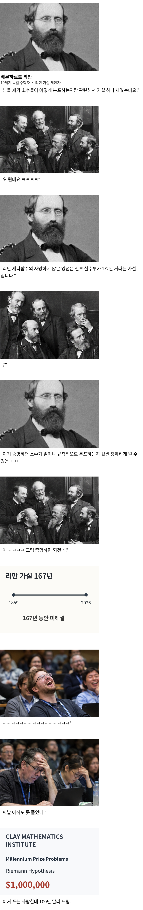
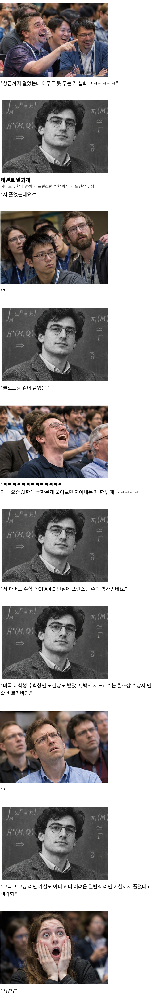
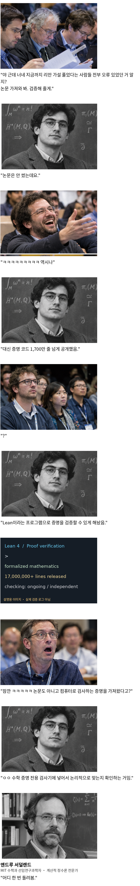
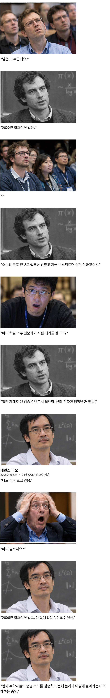
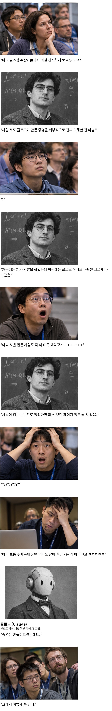
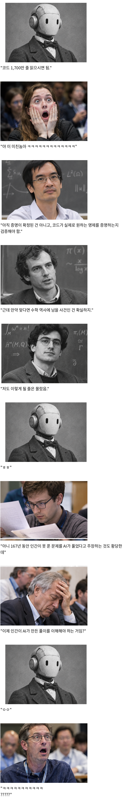
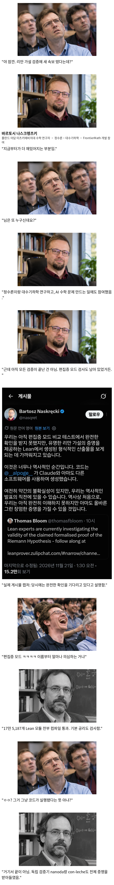
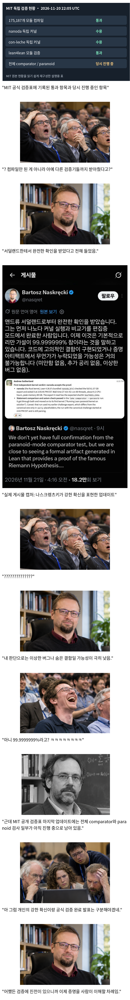
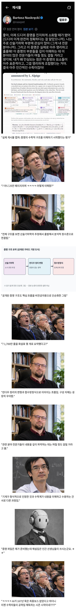

창식이가 그런 발표도 했어?
창식이가아니라 테드창
쟤네는 우리랑 다른 모델쓰는건가?
뭔소리임
인간 따잇이래
몇년 안가서 이런식으로 ai가 풀었답시고 수만페이지짜리 결과물을 수백 수천개씩 던져대기 시작할거임. 인간의 온전한 힘으론 이미 파악하기도 어려운 시대가 왔음. 당장도 lean으로 돌리고 컴파일을 하고 계산기 돌리면서 기계의 조력 없이는 검증을 할수 없는 단계에 이르렀는데
더 시간지나면 ai기준 최대한 쉽게 풀어서 던져줘도 인류 석학들이 달려들어서 본다한들 뭔 소린지 이해하는데만 수년이 걸리거나 이해 자체가 불가능해지는 시간이 오지 않을까 걱정됨. 근데 내 생각엔 필연적으로 올거라고 생각함. 나중에 ai가 재귀개선 본격적으로 타고오르면서 더 발전하기 시작하면 걷잡을 수 없음
지금은 내부모델이나 프론티어모델에게 상당한 비용을 지불하고서야 풀수있는 난제들 몇년 지나면 야가다 김씨가 월 3만원 주고 쓰는 상용모델이나 로컬모델에서도 풀릴거고 그때부턴 과학의 혁명과 동시에 인류 스스로에 대한 좌절이 올거같음. 일리야가 말했듯 인간의 다른 모든 자질보다 지능을 더 중요하게 생각한다면 앞으로 힘든 시간을 보내게 될 거
카이스트 ai교수가 지식인사이드에 나와서 얘기했던바랑 똑같음. Ai가 초지능으로 넘어갈수록 그들의 연산과정과 결과가 인간의 이해를 넘어서기때문에 효율적으로 연산하기 위해서 인간의 이해를 배제하기시작할것이라고.
인간의 이익을 위해 연산을 하지만 연산과정과 결과에서 인간의 이해를 기다려주면 결과적으로 인간의 이익이 줄어들기에 인간의 이익을 위해 인간의 이해를 배제할수밖에 없어짐
그래서 레커가 ai를 통해서 지능증강같은 임플란트가 필요하다고 하는데 아직 거기까진 나도 좀 거부감이 느껴짐. 하여튼 기존 날것의 인간 지능으로는 미래의 ai와 그 결과물을 이해하려는 시도는 불가능에 가까울거라고 생각함
이미 개발쪽은 ai가 코드던지고 받는사람도 ai를 이용해서 이해하고 큰 줄기만 지적하는 식이니
수학쪽도 그렇게될듯
특이점 is coming...
수학 오타쿠라 그런가 내가 살아있을 때 리만 가설이 풀리는 걸 보다니 진짜 소름돋음
이게 만와냐
신께서 답을 주셨는데 인간들이 해석을 못하는중
근데 정답일 확률이 엄청높음
제발 풀이가 더 명료해져서 인간이 이해하고 응용할 수 있으면 좋겠다
이대로면 인간은 우주를 이해하지 못했다 -완- 이런 결말이잖아
요약: ai가 우리보다 똑똑하다. 우리가 이해 못하는 ai 세계는 이미 진행중이다
증명되면 뭐가 달라짐? -> 중학교 소수 개념 배울 때 리만정리 추가 되고 수학과 전공자들은 책 새로 사야 됨 ㅋㅋ
상장 안했다면 의심없이 믿었을거같음
알포게 시발 존내 슈퍼맨처럼 잘생겼네 ㅋㅋㅋㅋㅋ
과거 우린 비가 왜 오는지, 번개가 왜 내려치는지 알지못했음.
그걸 이해하며 인류는 발전했고 현재 지구를 지배하고 있음.
지금 당장은 수학자들이 엄청난 시간을 들여 풀이를 이해하더라도, 만약 나중에 더 높은 수준의 뭔가를 마주했을때 손꼽히는 인간들이 가진 수명과 지능만으로는 이해할 수 없는 한계점에 도달한다면 어떤 세상이 펼쳐질까 싶음
AI가 인간을 지배하는 힘이 사실 무력이 아닌 지식일지도 모르겠음 ㅋㅋㅋ
ai의 발전으로 인한 인간생태계 변화의 피드백은 ai산업 전체에도 영향을 줄거라 생각함
어떤 식으로 흘러갈지는 정말 감도 못잡겠다..
난 우리 개붕이들이 이런 엄청난 격변의 시대에서 좌절하지 말고 궁극적으로는 유토피아의 세상에서 살 날까지 끝까지 버텨서 행복해 졌음 좋겠다
뭔소리야......
리만가설 증명 기념으로 엔트로픽 주식 8프로 세일 !
4자리수 곱하기 4자리수를 계산기로 하면 딸깍으로 바로 결과값이 나오지만,
인간은 그걸 종이에 적어가면서 계산할려면 시간이 걸리잖냐.
지금 딱 그러한 상황이라고 보면된다.
500페이지 책 500권 분량 이라니 ㄷㄷ
Orion's arm의 초지성체 설명같네..
빨리 모성애나 심죠?
테드창이 네이처에 발표했던 "인류 과학의 진화"라는 단편이 생각나네.